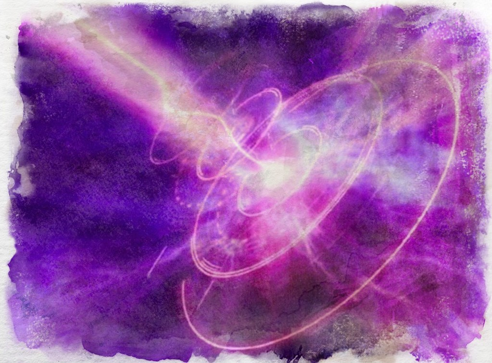

Qi
The lifeforce of the Aeon, qi is what fuels the shrivatsa, it is the vessel known as the atet and it is what the Nu feed upon. It fills the resevoirs of each elemental sphere and it seeps across their surfaces, wild magic giving life to nothingness. It awoke some of these creatures, giving them sapience - who in turn have learnt to harness qi for it's elemental power, via an artform known as weaving.
Weaving the qi lifeforce of the Aeon is a powerful but dangerous art, with most practioners dedicating themselves to one of the elemental branches. Some have even found ways to rune qi, that is to perform a technique and instill it into a written, painted or engraved symbol to be activated as needed. This form of weaving has given rise to the advent of advanced technology for some.